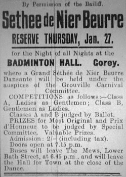

|
Lé nièr beurre est eune spécialité d'Jèrri - mais i' n'est pon nièr et n'y'a pon d'beurre dé d'dans. Ch'est eune manniéthe dé g'lée d'poummes grée atout du cidre et d's êpices, et ch'est eune tradition en Jèrri. Ch'est en tchi au S'tembre y'avait un amas d'poummes à êt' faites sèrvi épis hardi d'cidre d'qualité pâssabl'ye et nou-s'avait l'problième dé pouver garder la bouônté du frit duthant l'Hivé - et ch'tait împortant d'aver dé tchi d'chucré et doux.
La Séthée d'Nièr Beurre 'tait eune tradition sociale et dans eune cèrtaine mésuthe oulle l'est acouo au jour d'aniet. Nou s'rassembliait pouor graie l'nièr beurre et en faithe du rêvillon. Y'a tout l'travas d'la pèl'lie des poummes, d'la caûff'thie d'la peîlée d'cidre épis d'l'rêmouêthie toute la niet atout l'long rabot. Auprès eune journée et eune niétchie d'travas y'a acouo l'empot'tie du nièr beurre.
Nou peut acater du nièr beurre grée dans eune mannifactuthe (tch'a d'la m'lasse dé d'dans - tchi n'est pon s'lon ma r'chette, valet). Mais l'miyeu nièr beurre ofûche s'lon bein des gens est l'chein qu'nou-s'a aîdgi à graie sé-même.
Nou douothe du nièr beurre sus du pain - mais y'a d'aut's èrchettes étout tchi font sèrvi l'nièr beurre. Auve des saûciches, ch'est mangnifique - ou s'nou met eune tchullée d'nièr beurre sus un poulet d'vant d'lé mett' au fou, v'là tchi donne un mangnifique goût. Y'a d'la gliaiche au nièrre beurre, des chucrîns au nièr beurre, et d'la gâche au nièr beurre. Des ban'ses au nièr beurre - des rouôlots, ofûche - sont bouôns. Nou peut dêmêler eune tchullée d'nièr beurre dans du yaourt, étout: y'a tant d'idées pouor faithe sèrvi l'nièr beurre. Et nou trouve des pliats grées dans des restaurants atout du nièr beurre et nou fait d'la publyicité hors Jèrri entouor l'nièr beurre pouor attriotchi des touristes.
Viyant qu'i' n'y'a pon tant d'séthées d'nièr beurre coumme y'avait au temps pâssé, épis acouo la mâjorité des mousses d'achteu n'savent rein entouor la vie d'la campangne et la fèrméthie - et bein seu j'avons tout pliein d'gâchinn'nies et chucrinn'nies tout l'long d'l'année - y'a bein des jannes gens tchi n'ont janmais gouôté du nièr beurre. Quand nou vîsite des êcoles pouor explyitchi l'nièr beurre et la tchultuthe des poummes en Jèrri, y'a des mousses tchi craient qu'lé nièr beurre est d'tchi malaûc'seux: "Nièr? Nièr! Puèque!" Mais quand nou l's encouothage d'en gouôter, y'en a tchi dithent qué v'là tch'a l'goût d'Noué!


Viyiz étout: